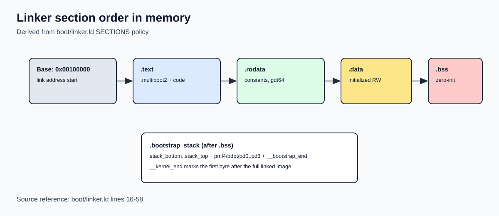
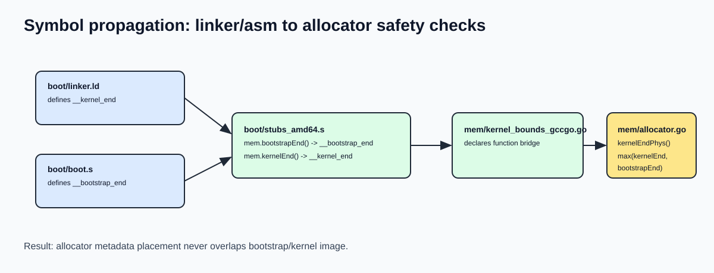

Linker and Initial Memory Layout
Why this chapter matters
GRUB loads your kernel image, but the linker script decides how that image is organized in memory. This file is the contract between build-time layout and runtime assumptions.
Linker vs loader: clear responsibility split
- Loader (GRUB): reads ELF from disk and places loadable segments in RAM
- Linker (
ldviaboot/linker.ld): defines section order, addresses, alignment, and exported symbols
If the linker layout is wrong, early boot code can fail even when GRUB is working correctly.
Source anchors (exact code references)
Use these anchors while reading:
- Linker declarations and section policy:
boot/linker.ld:11toboot/linker.ld:58 .bssclear at runtime:boot/boot.s:258toboot/boot.s:263- Symbol bridge assembly stubs:
boot/stubs_amd64.s:60toboot/stubs_amd64.s:66(__bootstrap_end)boot/stubs_amd64.s:68toboot/stubs_amd64.s:74(__kernel_end)- Go declarations for linker bounds:
mem/kernel_bounds_gccgo.go:5tomem/kernel_bounds_gccgo.go:6 - Allocator safety check:
mem/allocator.go:16tomem/allocator.go:23
Our linker script at a glance
Key file:
boot/linker.ld
Core declarations:
OUTPUT_FORMAT("elf64-x86-64")OUTPUT_ARCH(i386:x86-64)ENTRY(_start)
This means:
- 64-bit ELF output
- x86_64 target architecture
- entry symbol is
_start(implemented inboot/boot.s)
Runtime placement policy in SECTIONS
SECTIONS starts with:
. = 1M;
So the kernel image is linked to begin at physical address 0x00100000.
Then sections are laid out in this order, each page-aligned (BLOCK(4K) + ALIGN(4K)):
.text.rodata.data.bss.bootstrap_stack
Important detail: .text includes both:
*(.multiboot2)*(.text)
This helps keep the Multiboot2 header near the beginning of the image, where GRUB can find it.
What this means in practice (manual-level)
When GRUB loads your ELF, it does not "invent" a memory layout for your internals. It maps loadable segments according to the ELF produced by your linker script.
So if you change section order/alignment in boot/linker.ld, you are changing the runtime memory map your boot code relies on.
Exported symbols and who uses them
__bss_start, __bss_end
Defined inside .bss section (boot/linker.ld:45, boot/linker.ld:48).
Used in boot/boot.s (long_mode_entry) to clear zero-initialized memory:
movq $__bss_start, %rdimovq $__bss_end, %rcxrep stosb
__bootstrap_end
Defined in boot/boot.s right after bootstrap stack/page-table structures.
Read by the bridge stub in boot/stubs_amd64.s:60 to boot/stubs_amd64.s:66 and exposed as mem.bootstrapEnd().
__kernel_end
Defined in boot/linker.ld:57 at the end of linked kernel image.
Read by the bridge stub in boot/stubs_amd64.s:68 to boot/stubs_amd64.s:74 and exposed as mem.kernelEnd().
Why kernelEnd and bootstrapEnd are both needed
In mem/allocator.go, kernelEndPhys() chooses the max of:
kernelEnd()bootstrapEnd()
This is a safety guard: allocator metadata must never overlap kernel/boot data.
Why .bootstrap_stack is outside .bss
The bootstrap area stores runtime-critical early objects:
- 16 KiB stack (
stack_bottom..stack_top) - page tables (
pml4,pdpt,pd0..pd3)
If these lived inside .bss, generic .bss clearing logic could wipe them at the wrong time.
Keeping them in a dedicated section prevents accidental zeroing during runtime initialization.
Visual layout (Mermaid)
flowchart TB
A[Link address base: 0x00100000] --> B[.text\n(.multiboot2 + code)]
B --> C[.rodata\nconstants, gdt64]
C --> D[.data\ninitialized writable data]
D --> E[.bss\nzero-initialized globals\n__bss_start/__bss_end]
E --> F[.bootstrap_stack\nstack + early page tables\n... __bootstrap_end]
F --> G[__kernel_end]
Rendered image:

Visual flow of symbol propagation (Mermaid)
flowchart LR
A[boot/linker.ld defines __kernel_end] --> B[boot/stubs_amd64.s reads symbol]
C[boot/boot.s defines __bootstrap_end] --> B
B --> D[mem/kernel_bounds_gccgo.go declarations]
D --> E[mem/allocator.go kernelEndPhys]
E --> F[InitPFA chooses safe bitmap placement]
Rendered image:

Visual layout (address-oriented)
0x00100000 -----------------------------------------------
| .text |
| includes .multiboot2 header |
| includes _start and boot code |
-----------------------------------------------
| .rodata |
-----------------------------------------------
| .data |
-----------------------------------------------
| .bss |
__bss_start -> first byte of .bss |
__bss_end -> first byte after .bss |
-----------------------------------------------
| .bootstrap_stack |
| stack_bottom..stack_top |
| pml4/pdpt/pd0/pd1/pd2/pd3 |
__bootstrap_end -> first byte after bootstrap structures |
-----------------------------------------------
__kernel_end -> first byte after linked kernel image
Build-time contract vs runtime behavior
| Linker rule | Why it exists | Runtime dependency |
|---|---|---|
ENTRY(_start) |
Define real execution entry | GRUB jumps into _start |
. = 1M |
Known physical base | boot code and diagrams assume low fixed base |
.text starts with .multiboot2 |
Keep header discoverable | GRUB recognizes image as Multiboot2 |
| 4 KiB alignment | Page-friendly layout | simplifies paging/allocator assumptions |
.bss symbol bounds |
precise clear range | long_mode_entry zeroes exactly .bss |
.bootstrap_stack separate section |
protect early structures | avoids accidental clobbering of stack/page tables |
__kernel_end export |
mark reserved image end | allocator avoids kernel overwrite |
Related source files to read next
boot/boot.sfor_start, long mode switch, and.bssclearmem/allocator.gofor how linker symbols protect allocator placementmem/kernel_bounds_gccgo.go+boot/stubs_amd64.sfor symbol bridge into Go